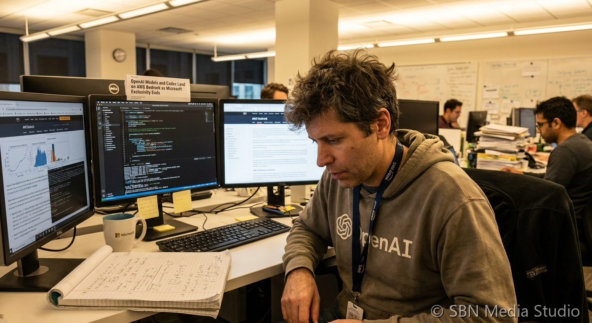

OpenAI Models and Codex Land on AWS Bedrock as Microsoft Exclusivity Ends

OpenAI's models, its Codex coding agent, and a new Bedrock Managed Agents capability went live on Amazon Web Services on April 28, 2026, one day after Microsoft and OpenAI announced a renegotiated cloud agreement that ended Azure's seven-year exclusivity. According to CNBC and GeekWire, the new contract keeps Microsoft as OpenAI's primary cloud partner and gives OpenAI products a "first on Azure" launch window when Microsoft can support them, but it lifts the hard restriction that previously kept frontier OpenAI inference off any other cloud. The Register reported that the AGI clause — the trigger that would have let OpenAI walk away from Microsoft if it declared artificial general intelligence — has been removed, with the bilateral agreement now extending through 2032 regardless.
The financial terms tracked the strategic shift. Microsoft will stop paying revenue share to OpenAI under the amended contract while retaining a license to OpenAI intellectual property through 2032. In return, OpenAI gains the ability to sell into AWS, Google Cloud, and Oracle, unlocking a previously reported $50 billion AWS infrastructure commitment that had been legally cloudy under the prior exclusivity. AWS CEO Matt Garman, in a joint Stratechery interview with OpenAI CEO Sam Altman, said Bedrock customers can now access OpenAI's models alongside Anthropic's Claude family and Amazon's own Nova line through a single API surface — the closest thing to a level playing field in frontier-model distribution since the Azure deal was signed in 2019.
The most consequential piece for enterprises is Bedrock Managed Agents, powered by OpenAI. According to OpenAI's announcement and SiliconANGLE coverage, the service lets AWS customers spin up multi-step agents that read internal documents, call SaaS APIs, and write code — all without leaving their existing AWS environments or going through Azure. Codex, OpenAI's coding agent, is included, meaning teams already on AWS commits can now run it against private repos under their existing data-residency and IAM controls. For Microsoft, the trade-off is that Copilot loses its structural advantage as the only mass-market entry point to OpenAI inference; for AWS, the deal closes a two-year competitive gap during which Bedrock's Claude-only positioning had been enough to win Anthropic mindshare but not yet the bulk of OpenAI-native enterprise workloads.
Sources
CNBC, GeekWire, The Register, OpenAI, Stratechery, SiliconANGLE